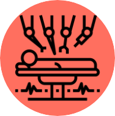

Surgery

If a patient's fast exam is positive in the RUQ, LUQ, or Bladder and their vital signs are unstable, they should be immediately sent to the operating room for an emergent exploratory laparotomy in order to find and attempt repair of any injuries.
